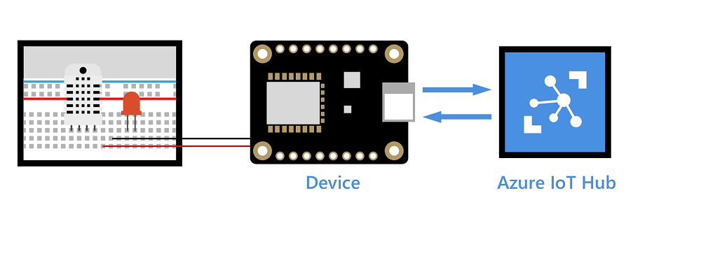
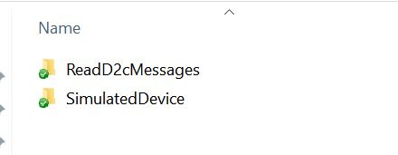
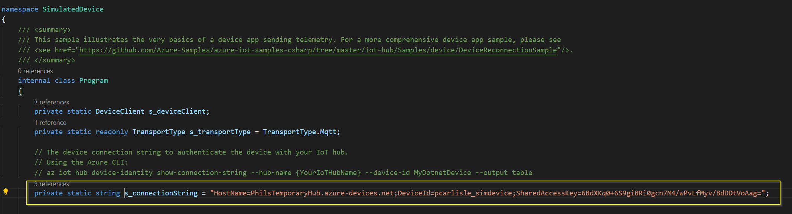
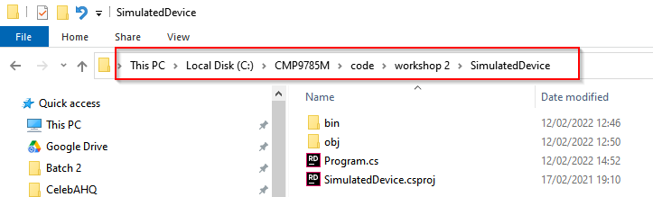
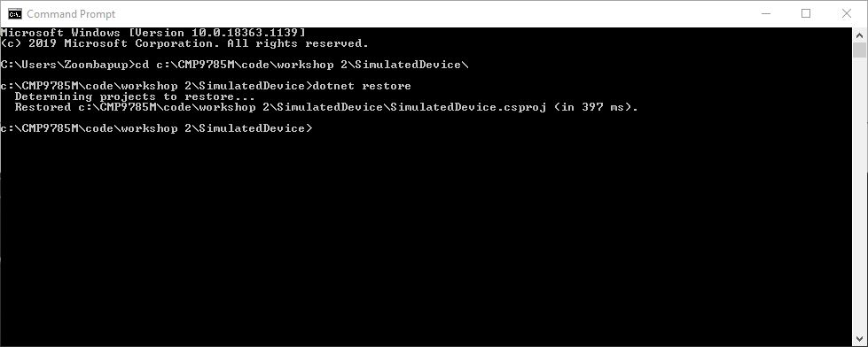
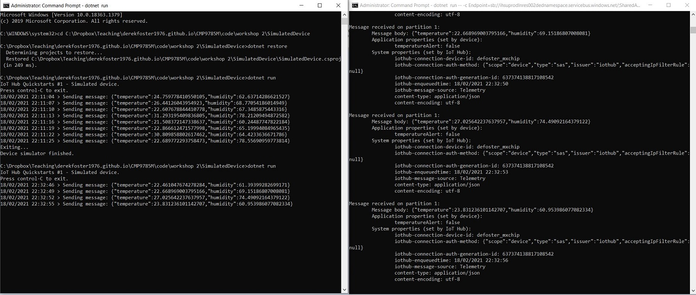

This workshop is in three parts and covers setting up a simulated IoT device, a service application, and connecting to an Azure IoT Hub:
Part 1 - Configuring the simulated IoT Device
Part 2 - Configuring the service app
Part 3 - Independent Task - Coding the simulated device to produce different sensor data
For context, this workshop will be focused on configuring and running a simluated IoT device written as C# console app. When the device runs it will generate mock sensor data and send it to an Azure IoT Hub (more on these next week!) using the MQTT Protocol. The Azure IoT hub consumes the sensor data but does not persistently store it, instead it can process and forward it through using other cloud services such as events and functions. The service app is also a C# console app. It connects to the Azure IoT Hub that the simulated device has sent the data to, and can display information on it. Read on for more.
As stated, the simulated device is a C# console app. It uses the Microsoft.Azure.Devices.Client class/namespace which is a device SDK for the Azure IoT hub. Real IoT devices such as speakers an intelligent thermostats would use this device SDK if connecting to an IoT hub.
For this part of the workshop, you will use the default settings of the sim device which is for producing temperature and humidity sensor data. Download the zip file here that contains both the simulated device code and the service app code that you will use in part 2 of this workshop.
You should extract the zip file into a folder where you have write access, I created a folder C:\CMP9785M\code\workshop 2\ on the C: drive
The downloaded zip file when extracted will have two folders as below:

Open the SimulatedDevice folder and then open the Program.cs file in VSC to get a better understanding of how it is constructed. Of note is line 29 which contains the connection string to a working Azure IoT Hub that belongs to the module delivery team staff:

This is the connection string the simulated device will use to send the sensor data. Note this connection string will not always be available to use, next week you will replace it with your own connection string when you create your own Azure Iot Hub. The next part of the code that is of interest is the generation of the sensor data and sending it to the Azure IoT Hub, as you can see in the code snippet below:
// Async method to send simulated telemetry
private static async Task SendDeviceToCloudMessagesAsync(CancellationToken ct)
{
// Initial telemetry values
double minTemperature = 20;
double minHumidity = 60;
var rand = new Random();
while (!ct.IsCancellationRequested)
{
double currentTemperature = minTemperature + rand.NextDouble() * 15;
double currentHumidity = minHumidity + rand.NextDouble() * 20;
// Create JSON message
string messageBody = JsonSerializer.Serialize(
new
{
temperature = currentTemperature,
humidity = currentHumidity,
});
using var message = new Message(Encoding.ASCII.GetBytes(messageBody))
{
ContentType = "application/json",
ContentEncoding = "utf-8",
};
// Add a custom application property to the message.
// An IoT hub can filter on these properties without access to the message body.
message.Properties.Add("temperatureAlert", (currentTemperature > 30) ? "true" : "false");
// Send the telemetry message
await s_deviceClient.SendEventAsync(message);
Console.WriteLine($"{DateTime.Now} > Sending message: {messageBody}");
await Task.Delay(3000);
}
}
With a better understanding of how the simulated device works, you should be able to modify its code to produce different types of sensor data. You will do this in part 3 of this workshop.
Next, open an elevated terminal (see here for Windows). Navigate to the SimulatedDevice folder, this was in the zip file you downloaded and extracted. The image below shows an example path you need on a Windows machine, this path will be different on your own machine:

At the terminal (or command prompt) change the directory to the correct path on your machine:
cd C:\CMP9785M\code\workshop 2\SimulatedDevice
Now enter the below command to ensure the required packages are installed to run it:
dotnet restore
Your terminal window should look similar to below at this point:

Now its time to run the simulated device, enter the below command and it should run and start sending sensor data every 3 seconds to the specified Azure IoT Hub:
dotnet run
After several messages have been sent containing the sensor data, press [CTRL] + [c] in the terminal window to stop the device but leave the window open for now.
In the next part you are going to run a service app that reads the sensor data from the Azure IoT Hub.
The service application connects to the service-side Events endpoint of an Azure IoT Hub. The application receives the device-to-cloud messages sent from your simulated device via the IoT Hub. An IoT Hub service application (app) typically runs in the cloud to receive and process device-to-cloud messages. We are going to use it in this workshop for viewing and general debugging purposes. Follow the steps below:
1) Open another terminal window (same as you did earlier)
2) This time get the path of the ReadD2cMessages folder that you download as part of the zip file earlier
3) In the terminal windows enter the below command to change the directory to the ReadD2cMessages folder (note your path will be different):
cd C:\CMP9785M\code\workshop 2\ReadD2cMessages
4) Now enter the below command to ensure the required packages are installed to run it:
dotnet restore
5) Your terminal window should look similar to below at this point:

6) In order to run the service app we need to pass it the Azure IoT Hub endpoint string as a parameter, more on this next week! enter the following command on the command line:
dotnet run -- -c Endpoint=sb://ihsuprodlnres020dednamespace.servicebus.windows.net/;SharedAccessKeyName=service;SharedAccessKey=CEF2WbydSaLn16mZhBJB6iGlKXtjaHRT+5TBvvNcB4c=;EntityPath=iothub-ehub-philstempo-17319764-667a18c69a
You should see some data from it that was sent recently (from you running the simulated device previously), this is the temperature and humidity sensor data that was sent:

Next, go back to the terminal window for the simulated device and start running it again by entering the dotnet run command again. With both terminal windows side-by-side as below, you will be able to watch the simulated device send sensor data to the Azure IoT Hub. Each time sensor data arrives in the IoT hub it triggers an event that the service app can read and display in its terminal window. You will be able to view live sensor data as it arrives in the IoT Hub:

OK, now you should have a basic understanding of the simulated device, the service app, and what an Azure IoT Hub is. We will look at Azure IoT Hubs in more detail next week.
In each of the terminal windows press and hold [CTRL+[c] to stop them running gracefully, then close both terminal windows. The next part of the workshop is not guided and is an independent programming task.
This part of the workshop is focused on an independent task to modify the simulated device code. The task you need to complete for this is to modify the code to include the following sensors, some suggested datatypes have been included for some sensors:
light switch on or off - boolean
fan speed - integer with a minimum/maximum value
ambient light sensor
electricity monitor
To do the above you must add new code as well as use identifiable variable names, and suitable randomisation/scaling.
For your assessment work, you may wish to consider what type of simulated IoT sensor data you will use and modify the simulated device code accordingly.